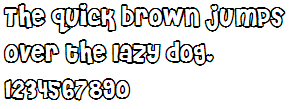

RF1001: 各浏览器对 '@font-face' 规则支持的字体格式不同，IE 支持 EOT 字体，Firefox Safari Opera 支持 TrueType 等字体
标准参考
根据 CSS3 草案中的描述，'@font-face' 规则允许使用链接到需要时自动激活的字体。这使得用户可以使用在线的字体，而不仅仅拘泥于使用用户端系统内的字体。一套对字体的描述定义了字体资源的位置，可以是本地也可以是其他地方，以及自定义个性化字体风格。
规则定义格式：
@font-face {
descriptor: value;
descriptor: value;
[...]
descriptor: value;
}
如：
@font-face {
font-family: Gentium;
src: url(http://site/fonts/Gentium.ttf);
}
p { font-family: Gentium, serif; }
字体引用：src 描述
- 名称
- src
- 值
- [ <uri> [format(<string> [, <string>]*)] | <font-face-name> ] [, <uri> [format(<string> [, <string>]*)] | <font-face-name> ]*
- 初始值
- N/A
此描述指定了资源中包含的字体数据。无论字体是下载的或者是本地安装的，这个描述都是必需的，以逗号作为分隔的外部引用或本地安装的字体名称的列表中各值的优先级依次递减。当遇到不合理的数据则被当作未找到字体处理。
外部引用包含一个 URI，后面有一个可选的 format 参数可以提示该资源 URI 所引用的字体格式，format 与 URI 之间通过逗号分隔。
如：src: url(../fonts/LateefRegAAT.ttf) format("truetype-aat"), url(../fonts/LateefRegOT.ttf) format("opentype");
初步定义的格式字符串列表：
| String | Font Format | Common extensions |
|---|---|---|
| truetype | TrueType | .ttf |
| opentype | OpenType | .ttf, .oft |
| truetype-aat | TrueType with Apple Advanced Typography extensions | .ttf |
| embedded-opentype | Embedded OpenType | .eot |
| svg | SVG Font | .svg, .svgz |
关于 @font-face rule 的详细资料，请参考 CSS Fonts Module Level 3 草案 4.1 The @font-face rule 中的内容。
关于 src descriptor 的详细资料，请参考 CSS Fonts Module Level 3 草案 4.3 Font reference: the 'src' descriptor 中的内容。
问题描述
各浏览器对 '@font-face' 规则支持的字体格式不同，IE 仅支持 Embedded OpenType，Firefox 支持 TrueType、OpenType 及 WOFF，Chrome、Safari、Opera 则支持 TrueType、OpenType、SVG Font。
造成的影响
若在使用 '@font-face' 规则时仅仅考虑一种字体格式，则可能在某些浏览器中无法应用规则所引入的字体。
受影响的浏览器
| IE6 | 仅支持 Embedded OpenType(.eot) 格式。 |
|---|---|
| IE7 | 仅支持 Embedded OpenType(.eot) 格式。 |
| IE8 | 仅支持 Embedded OpenType(.eot) 格式。 |
| Firefox 3.5 | 支持 TrueType、OpenType(.ttf, .otf) 格式。 |
| Firefox 3.6 | 支持 TrueType、OpenType(.ttf, .otf) 及 WOFF 格式。 |
| Chrome | 支持 TrueType、OpenType(.ttf, .otf) 及 SVG Font(.svg) 格式。 |
| Safari | 支持 TrueType、OpenType(.ttf, .otf) 及 SVG Font(.svg) 格式。 |
| Opera | 支持 TrueType、OpenType(.ttf, .otf) 及 SVG Font(.svg) 格式。 |
问题分析
'@font-face' 规则首先定义在 CSS2 规范中，但是在 CSS2.1 中被删除，目前又被纳入到 CSS3 推荐草案中。at-rule（@）包含一条或多条被称作 font descriptor （字体描述）的特性声明，与那些在常规的 CSS 规则中的类似。由于 '@font-face' 规则没有被纳入到目前应用最广泛的 CSS2.1 规范中，各浏览器虽然对此规则均支持，但支持的细节有所区别。
IE 从 4.0 开始支持 '@font-face' ，使用了 Embedded OpenType (EOT) 格式。借助微软官方提供的字体压缩工具 'Microsoft WEFT(Web Embedding Fonts Tool)' 可以将 OpenType TT(.ttf) 格式的字体压缩至较小的体积，压缩后的类型即 .eot 格式。.eot 格式的字体仅被 IE 所支持。而到目前正式发布的最新版本的 IE8 也仍然仅支持 .eot 格式的字体。
IE 同样不支持 '@font-face' 规则中 src 描述中使用 format 提示所引用字体文件的格式。这将导致 '@font-face' 规则认为 src 描述定义错误而失效。
在互联网上随机找到一个 TrueType 字体 'Cherl'，通过 'Microsoft WEFT' 将 'Cherl' 字体文件转换为 .eot 格式。或者通过开源的转换工具 'ttf2eot' 进行字体格式转换。
接下来就可以在 IE 中以类似 CSS3 草案中提到的格式定义 '@font-face' 规则。如：
<style>
@font-face {
font-family: Cherl;
src: url(cherl.eot);
}
</style>
这时就可以通过为声明设定 font-family: Cherl 来应用自定义的字体。
更多资料参考：
- http://www.w3.org/Submission/EOT/
- http://en.wikipedia.org/wiki/Embedded_OpenType
- http://msdn.microsoft.com/en-us/library/ms530757(VS.85).aspx
从 Firefox 3.5 Chrome 3.0 Safari 3.1 Opera 10 开始，其他非 IE 的主流浏览器均提供了对 '@font-face' 规则的支持。相比 IE 中所支持的微软私有的 .eot 格式，这些浏览器则提供了对使用范围更广泛、更常见的 TrueType 与 OpenType 格式的支持。
'@font-face' 规则的定义格式与 IE 中类似，但是支持 CSS3 草案中所描述的 format 提示参数等。
<style>
@font-face {
font-family: Cherl;
src: url(cherl.ttf);
}
</style>
更多资料参考：
- https://developer.mozilla.org/en/css/@font-face
- http://developer.apple.com/safari/library/documentation/appleapplications/reference/SafariCSSRef/Articles/OtherStandardCSS3Features.html#//apple_ref/doc/uid/TP40007601-SW2
- http://my.opera.com/ODIN/blog/font-face-web-fonts-resources
非 IE 浏览器对其他一些字体格式的支持
Chrome Safari Opera 在 TrueType 与 OpenType 字体格式之外，还支持 SVG 字体。通过 SVG 中的 FONT 元素及其他相关元素可以在 SVG 文件中定义字体。如：
<!doctype html>
<html>
<head>
<style>
@font-face {
font-family: ubuntu;
src: url(UbuntuTitleBold.svg#UbuntuTitleBold) format("svg");
}
#webfont {
font: 24px/150% ubuntu;
width: 300px;
}
</style>
</head>
<body>
<div id="webfont">The quick brown jumps over the lazy dog. 1234567890</div>
</body>
</html>
SVG 字体范例：UbuntuTitleBold.svg
{kind=link}
目前 IE 和 Firefox 尚不支持此格式，在 Chrome Safari Opera 中效果如下：

SVG 字体转换：http://xmlgraphics.apache.org/batik/tools/font-converter.html
更多资料参考：
此外，Firefox 3.6 开始，又增加了一种字体格式支持 —— WOFF（Web Open Font Format，开放式字体规范）。WOFF 由字体设计师 Erik van Blockland、Tal Leming 和 Mozilla 的 Jonathan Kew 主持设计，可以看作是 TrueType、OpenType 字体数据的简单重新封装，不过内建了压缩功能，因而体积更小、方便下载和传播。另外还支持元数据，所以厂商可以在他们的字体中加入相关识别信息。
WOFF 字体转换：http://people.mozilla.com/~jkew/woff/
更多资料参考：
- https://developer.mozilla.org/en/About_WOFF
- http://people.mozilla.com/~jkew/woff/woff-spec-latest.html
多种字体格式转换：http://www.fontsquirrel.com/fontface/generator
下面列表查看各浏览器对各种 Web 字体的支持情况：
| IE6 IE7 IE8 | Firefox 3.5+ | Firefox 3.6+ | Chrome | Safari | Opera | |
|---|---|---|---|---|---|---|
| TrueType, OpenType | 不支持 | 支持 | 支持 | 支持 | 支持 | 支持 |
| Embedded OpenType | 支持 | 不支持 | 不支持 | 不支持 | 不支持 | 不支持 |
| SVG Font | 不支持 | 不支持 | 不支持 | 支持 | 支持 | 支持 |
| WOFF | 不支持 | 不支持 | 支持 | 不支持 | 不支持 | 不支持 |
解决方案
由于各浏览器对 '@font-face' 规则字体格式支持存在差异，若仅通过定义一个 '@font-face' 规则，可以通过 CSS hack 的方式在 IE、Firefox、Chrome、Safari、Opera 中得到相同的字体效果。
参考代码如下：
<!doctype html>
<html>
<head>
<style>
@font-face {
font-family: Cherl;
src: url(cherl.ttf);
src: url(cherl.eot)\9;
}
#webfont {
font: 24px/150% Cherl;
width: 300px;
}
</style>
</head>
<body>
<div id="webfont">The quick brown jumps over the lazy dog. 1234567890</div>
</body>
</html>
上面代码在各浏览器中的效果均为：

 同时，Google 提供了一种创建在线字体（WebFont）的方式：http://code.google.com/intl/zh-CN/apis/webfonts/
同时，Google 提供了一种创建在线字体（WebFont）的方式：http://code.google.com/intl/zh-CN/apis/webfonts/
利用 Google 提供的 API，可以在任何页面中加入 WebFont，同时支持各种主流浏览器。
参见
知识库
相关问题
测试环境
| 操作系统版本: | Windows 7 Ultimate build 7600 |
|---|---|
| 浏览器版本: |
IE6 IE7 IE8 Firefox 3.6.6 Chrome 6.0.477.0 dev Safari 5.0 Opera 10.10 |
| 测试页面: | fontface.html svgfont.html |
| 本文更新时间: | 2010-07-08 |
关键字
font-face CSS 字体 自定义 font SVG TrueType OpenType WOFF EOT